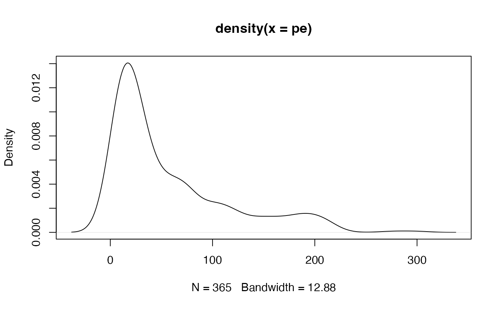

Calculates phylogenetic endemism (sum of 'unique' branch lengths) of multiple ecological samples.
phylo_endemism(x, phy, weighted = TRUE)
| x | is the community data given as a data.frame or matrix with species/OTUs as columns and samples/sites as rows (like in the vegan package). Columns are labelled with the names of the species/OTUs. Rows are labelled with the names of the samples/sites. Data can be either abundance or incidence (0/1). Column labels must match tip labels in the phylogenetic tree exactly! |
|---|---|
| phy | a (rooted) phylogenetic tree (phylo) with branch lengths |
| weighted | is a logical indicating whether weighted endemism (default) or strict endemism should be calculated. |
Takes a community data table and a (rooted) phylogenetic tree (with branch lengths) and calculates either strict or weighted endemism in Phylogenetic Diversity (PD). Strict endemism equates to the total amount of branch length found only in the sample/s and is described by Faith et al. (2004) as PD-endemism. Weighted endemism calculates the "spatial uniqueness" of each branch in the tree by taking the reciprocal of its range, multiplying by branch length and summing for all branch lengths present at a sample/site. Range is calculated simply as the total number of samples/sites at which the branch is present. This latter approach is described by Rosauer et al. (2009) as Phylogenetic endemism.
Faith, D.P., Reid, C.A.M. & Hunter, J. (2004) Integrating phylogenetic diversity, complementarity, and endemism for conservation assessment. Conservation Biology 18(1): 255-261.
Rosauer, D., Laffan, S.W., Crisp, M.D., Donnellan, C. & Cook, L.G. (2009). Phylogenetic endemism: a new approach for identifying geographical concentrations of evolutionary history. Molecular Ecology 18(19): 4061-4072.
